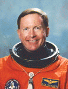

Lyndon B. Johnson Space Center
Houston, Texas 77058
|
National Aeronautics and Space Administration Lyndon B. Johnson Space Center Houston, Texas 77058 |
 |
Biographical Data |
||
Richard (Dick) N. Richards (Captain, USN, RET.)
NASA Astronaut (former)
PERSONAL DATA: Born August 24, 1946, in Key West, Florida, but considers Houston, Texas, to be his hometown. Married to the former Lois Hollabaugh of Amarillo, Texas. He enjoys skiing, running, and golf.
EDUCATION: Graduated from Riverview Gardens High School in St Louis, Missouri, in 1964; received a bachelor of science degree in chemical engineering from the University of Missouri in 1969, and a master of science in aeronautical systems from the University of West Florida in 1970.
ORGANIZATIONS: Member of the Society of Experimental Test Pilots; Tau Beta Pi, Engineering Honorary; Lambda Chi Alpha, Social Fraternity; and the Association of Space Explorers.
SPECIAL HONORS: Defense Superior Service Medal, Distinguished Flying Cross, Defense Meritorious Service Medal, NASA Distinguished Service Medal, NASA Space Flight Medals (4), NASA Exceptional Service Medal, National Defense Service Medals (2), Vietnam Service Medal.
Distinguished Graduate of U.S. Naval Test Pilot School, and Naval Air Test Center Test Pilot of the Year for 1980.
U.S. NAVY EXPERIENCE: Richards was commissioned an ensign in the United States Navy upon graduating from the University of Missouri in 1969 and was designated a naval aviator in August of the following year. From 1970 to 1973, he flew support missions in the A-4 Skyhawk and F-4 Phantom airplanes while assigned to Tactical Electronic Warfare Squadron Thirty-Three at Norfolk Naval Air Station, Virginia. He subsequently reported to Fighter Squadron 103 and deployed to the North Atlantic and Mediterranean aboard the USS America (CV-66) and USS Saratoga (CV-61), flying F-4 airplanes. Selected for test pilot training, he reported to the United States Naval Test Pilot School at Patuxent River, Maryland, in 1976. A tour in the Naval Air Test Center's Carrier Systems Branch and F/A-18A Program Office of the Strike Aircraft Test Directorate followed Test Pilot School graduation. Over the next 3-1/2 years, Richards served as a project test pilot for automatic carrier landing systems development work in F-4 and A-7 aircraft and also conducted approach/landing/catapult flying qualities and catapult minimum end speed performance testing of a prototype "slatted" F-4S airplane. As carrier suitability project officer for the F/A-18A Hornet airplane, he made the first shipboard catapults and arrested landings during Initial Sea Trials of the F/A-18A on board the USS AMERICA in 1979. He was reassigned to Fighter Squadron 33 in May 1980 and was en route to that assignment when notified of his selection as an astronaut candidate.
Flight experience has included over 5,300 hours in 16 different types of airplanes. He has also completed more than 400 landings on board various aircraft carriers.
NASA EXPERIENCE: Selected as an astronaut candidate by NASA in May 1980, Richards became an astronaut in August 1981. Richards has flown four times-- STS-28 (August 8-13, 1989), STS-41 (October 6-10, 1990), STS-50 (June 25-July 9, 1992), and STS-64 (September 9-20, 1994)--and has logged a total of 33 days, 21 hours, 32 minutes, 15 seconds in space.
In April 1995, Richards left the Astronaut Office and was assigned to the Space Shuttle Program Office at the Johnson Space Center. He served as the Mission Director/Manager for the second Hubble Space Telescope Servicing Space Shuttle Mission (STS-82), and Mission Manager for the second Tethered Satellite System Space Shuttle mission (STS-75). In 1997 Richards was assigned as the Manager, Space Shuttle Program Integration. In that capacity he oversaw day-to-day operational planning for all Space Shuttle missions. This included acting as Chairman of the Flight Mission Management Team.
In August 1998, Richards left NASA to join the Boeing Company. Between 1998 and 2007 he supported NASA via Boeing’s Space Shuttle Sustaining Engineering Support Contract. Boeing has over 1000 employees across the United States involved with Space Shuttle flight operations. In 2007 Richards retired from Boeing as the Deputy Program Manager for Space Shuttle, and now lives in Houston, Texas.
SPACE FLIGHT EXPERIENCE: On his first space flight, Richards was pilot on the crew of STS-28 which launched from Kennedy Space Center, Florida, on August 8, 1989. The mission carried Department of Defense payloads and a number of secondary payloads. After 80 orbits of the Earth, this five-day mission concluded with a dry lakebed landing on Runway 17 at Edwards Air Force Base, California, on August 13, 1989. Mission duration was 121 hours, 9 seconds.
Slightly more than one year later, Richards commanded the crew of STS-41. The five-man crew launched aboard the Space Shuttle Discovery on October 6 from the Kennedy Space Center, Florida, and landed at Edwards Air Force Base, California, on October 10, 1990. During 66 orbits of the Earth, the STS-41 crew successfully deployed the Ulysses spacecraft, starting this interplanetary probe on its four-year journey, via Jupiter, to investigate the Polar Regions of the Sun.
In June 1992, Richards commanded the crew of STS-50 aboard the Space Shuttle Columbia. STS-50 was the first flight of the United States Microgravity Laboratory and the first extended duration Orbiter flight. Over a two-week period, the STS-50 flight crew conducted a wide variety of experiments relating to materials processing and fluid physics in a microgravity environment. At that time it was the longest Space Shuttle flight in history.
In September 1994, Richards commanded the STS-64 crew aboard the Space Shuttle Discovery. Mission highlights included: the first use of a space based laser for environmental research; deployment and retrieval of a spacecraft in support of solar wind and corona studies; robotic processing of semiconductors; maneuvering the robotic arm in close proximity to over 100 Shuttle reaction control system jet firings to measure forces imparted to a plume detection instrument in support of future Space Station/Shuttle rendezvous flights; first untethered space walk in 10 years to test a self-rescue jetpack. Mission duration was 10 days, 22 hours, 51 minutes.
JULY 2007
This is the only version available from NASA. Updates must be sought direct from the above named individual.
{kind=link}